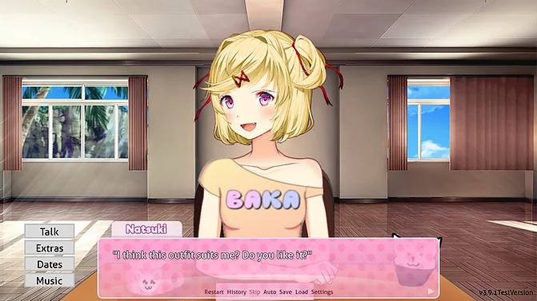
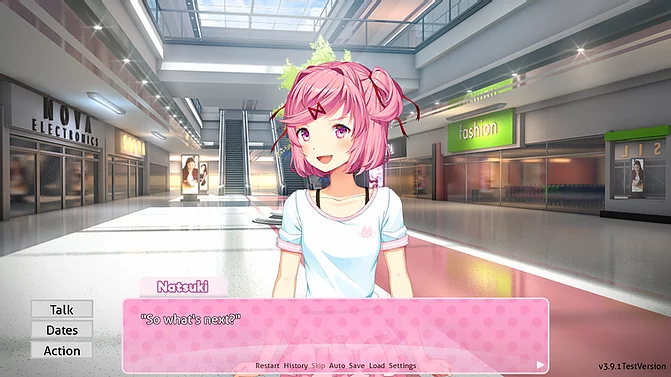
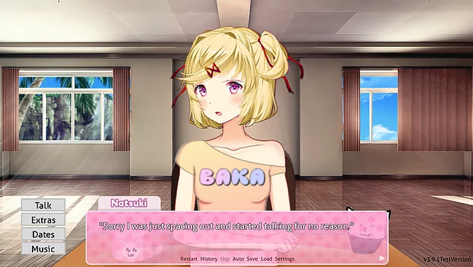
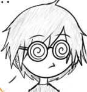
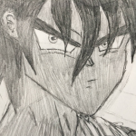
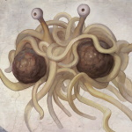

Just
Natsuki
A Doki Doki Fan Mod!
Features
- Customization!
- Take her out!
- Talk for hours!
- 
- 
- 
The Team :
 Catgirl Daisy (Project lead, main coder, main writer):
Catgirl Daisy (Project lead, main coder, main writer):I'm Daisy! I created Just Natsuki on a whim after someone asked for a Natsuki mod, and here we are. I am the lead coder and writer for the project.
JustNat'sFang: (Programmer, Tester, Editor)
Just a guy who loves writing code. Working hard to make a better Natsuki!
Just a guy who loves writing code. Working hard to make a better Natsuki!
Is a potato.

JMO (Art Director, Artist, Writer):
Hi! Just a multi-collaborative dev here who's passionate about and loves what they do.
Hi! Just a multi-collaborative dev here who's passionate about and loves what they do.

Yoshatribe: (Writer)
New [to] DDLC modding, co-writer with built-in spell check.
New [to] DDLC modding, co-writer with built-in spell check.
Blizzardsev: (Artist, programmer, writer)
Doing their best to learn and give Natsuki the attention she deserves!
Doing their best to learn and give Natsuki the attention she deserves!

Spaghetsie: (Programmer)
Just a guy doing something productive for once.
Just a guy doing something productive for once.
What's happening!
Check us out on